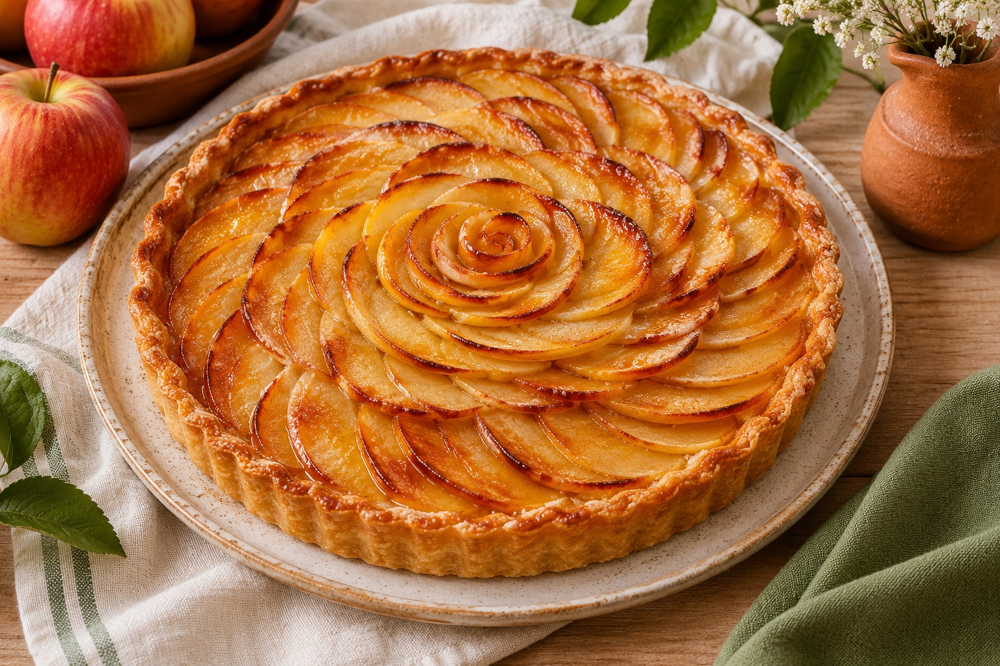

Entrée
Salade méditerranéenne
Une salade fraîche et colorée, entre légumes croquants, feta et huile d’olive.
Mon carnet personnel
Une recette à essayer, un dessert à refaire… Retrouvez ici vos idées gourmandes mises de côté.
Une salade fraîche et colorée, entre légumes croquants, feta et huile d’olive.

Des pommes fondantes sur une pâte croustillante, pour une pause gourmande à partager.

Une boisson fruitée et onctueuse aux saveurs ensoleillées de mangue et de passion.
Explorez les recettes et cliquez sur un cœur pour retrouver vos coups de cœur ici.
Découvrir les recettes